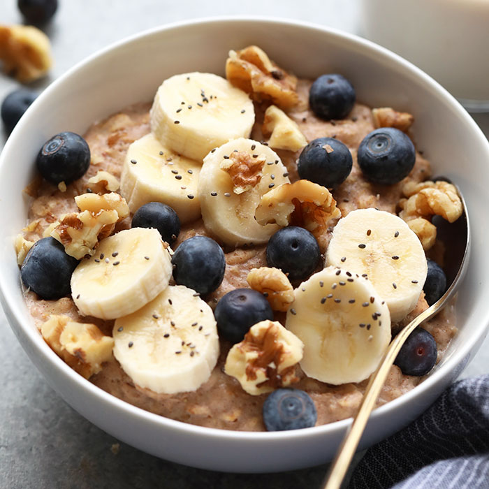

Oatmeal Yum Yum

Yummy oat meal with a special twist
This recipe is delicious and great fun for the whole family.
Kids, please do not try this at home.
Ingredients
- Oats
- Liquid (milk works great!)
- Peanut butter
- Walnuts (chopped please)
- Berries (blue or other)
Steps
- You're gonna need a bowl
- 1/2 cup of oats go into that bowl
- Add 1 cup liquid
- Microwave for 2 minutes and keep an eye out for overflow
- Remove from microwave and stir
- Microwave for 1 more minute
- Remove and stir in a heaping spoonful of peanut butter
- Sprinkle walnuts and berries on top
- Eat it up!